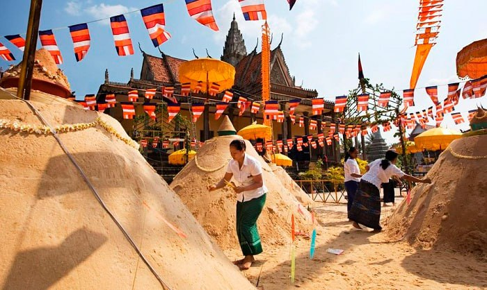
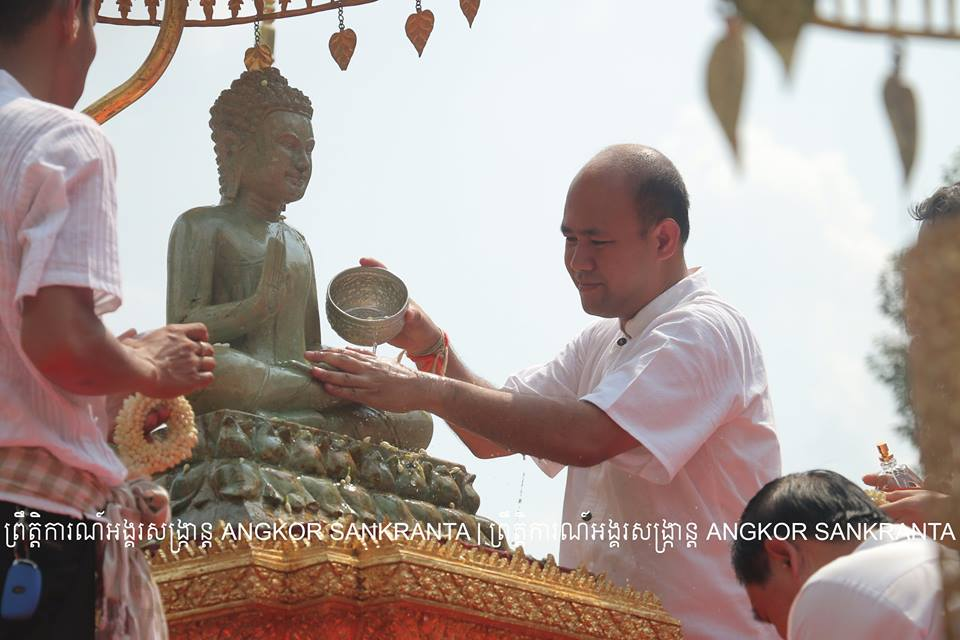

ទំនៀមទម្លាប់ និងសកម្មភាពតាមប្រពៃណី

ការពូនភ្នំខ្សាច់
ការពូនភ្នំខ្សាច់ ជាទំនៀមទម្លាប់មួយដែលប្រជាជនខ្មែរតែងធ្វើនៅតាមវត្តអារាម។ គេជឿថាការយកខ្សាច់មកពូនជាភ្នំ គឺដើម្បីឧទ្ទិសកុសលជូនដល់ព្រះចូឡាមណីចេតិយ ដែលបញ្ចុះព្រះសិរសារបស់កបិលមហាព្រហ្មនៅឋានសួគ៌។
លើសពីនេះ ការពូនភ្នំខ្សាច់ក៏មានន័យថាជាការលាងជម្រះបាបកម្ម ឬរឿងមិនល្អដែលបានកើតឡើងក្នុងឆ្នាំចាស់ឱ្យរលាយបាត់ទៅតាមរយៈគ្រាប់ខ្សាច់នីមួយៗ និងដើម្បីសុំសេចក្តីសុខសប្បាយសម្រាប់ឆ្នាំថ្មី។

ពិធីស្រង់ព្រះ និង អ្នកមានគុណ
ពិធីស្រង់ព្រះ គឺជាកិច្ចបង្កើយនៃបុណ្យចូលឆ្នាំ ដែលធ្វើឡើងនៅថ្ងៃទី៣ (ថ្ងៃឡើងស័ក)។ ប្រជាជនប្រើប្រាស់ទឹកអប់ផ្កាស្រស់ ដើម្បីស្រោចស្រពលើព្រះពុទ្ធរូប និងព្រះសង្ឃ។
ជាមួយគ្នានេះដែរ កូនចៅតែងរៀបចំទឹកអប់ដើម្បីស្រោចស្រពជូនមាតាបិតា ជីដូនជីតា ដើម្បីសម្តែងកតញ្ញុតាធម៌ ដឹងគុណ និងសុំខមាទោសចំពោះកំហុសឆ្គងផ្សេងៗ។ ជាការឆ្លើយតប ចាស់ទុំនឹងផ្តល់ពរជ័យឱ្យកូនចៅមានសេចក្តីសុខ និងជោគជ័យពេញមួយឆ្នាំ។